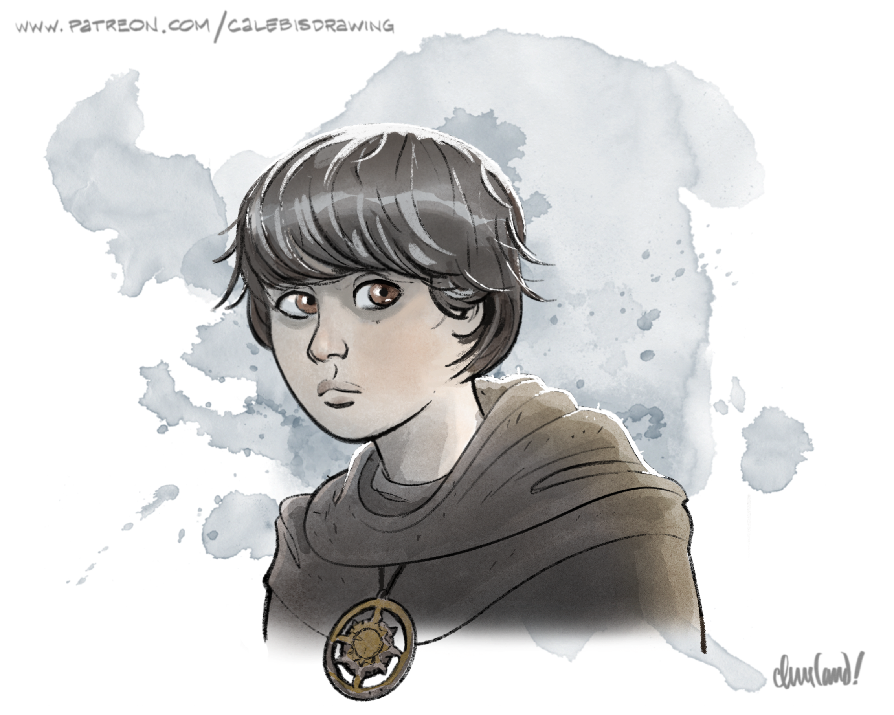

_Uma aventura para cinco personagens de 4º nível._
Neste arco, os jogadores escoltam Ireena Kolyana até a Igreja de St. Andral, em Vallaki, cumprindo o juramento feito ao irmão dela, Ismark. Father Lucian, o pároco da igreja, no entanto, os informa de que os ossos de Saint Andral — a fonte da magia protetora do templo — foram roubados há pouco, colocando em risco suas proteções e seus paroquianos.
Os jogadores têm até a noite do quinto dia após a chegada a Vallaki para identificar o ladrão (Milivoj, o zelador da igreja), rastrear os ossos até seu esconderijo (a funerária de Vallaki) e devolvê-los ao lugar de direito, dentro da igreja. A missão os colocará em conflito direto com Volenta Popofsky, a mais sádica das noivas vampíricas de Strahd, e com seus lacaios vampíricos.
Conseguirão os jogadores frustrar o plano de Volenta e restaurar a proteção da igreja? Ou a igreja se perderá na escuridão e no sangue, sua luz trêmula sufocada entre as sombras?
Se os jogadores levarem Ireena à Igreja de St. Andral já na primeira noite em Vallaki (ou seja, no "dia zero" em Vallaki), eles chegam e encontram Father Lucian encerrando um culto para sua congregação. Depois de tranquilizar Willemina Rikalova (veja Arco C - Adentrando o Vale para mais informações sobre Willemina), Father Lucian dá as boas-vindas aos jogadores e a Ireena e oferece sua ajuda.
Se souber que Ireena espera encontrar santuário na igreja, Father Lucian de bom grado lhe oferece um catre para dormir na capela. Quando Ireena se propõe a recompensá-lo pela gentileza, Father Lucian pondera o pedido e então a convida a auxiliar nas tarefas e na educação de Yeska enquanto durar sua estadia — convite que Ireena aceita com gratidão.
Na manhã seguinte, depois que os ossos de St. Andral são roubados conforme descrito abaixo, Ireena procura os jogadores na Estalagem Água Azul antes da conversa deles com Urwin Martikov descrita em Arco C - Adentrando o Vale e pede que visitem a igreja para falar com Father Lucian sobre um "incidente". (Father Lucian pediu a ela que não comentasse o incidente fora da igreja, com medo de causar pânico.) O restante deste arco então segue normalmente.
Quer acesso a uma comunidade no Discord de Mestres de _Reloaded_, ajuda sob demanda do autor para a sua campanha e mentoria e preparação de sessão individuais? Confira o Patreon do autor para:
- Acesso ao Discord (Bronze+)
- Blogs com comentários do desenvolvedor (Prata+)
- Ajuda personalizada com sua campanha (Ouro+)
- Mentoria ao vivo e preparação de sessão individuais (Platina+)
D1. Igreja de St. Andral
Esta cena ocorre no Capítulo 5: Área N1.
A igreja é em grande parte como descrita em N1. St. Andral's Church (p. 97).
Os ocupantes da igreja seguem a rotina abaixo, a menos que sejam interrompidos:
- Ao amanhecer, Yeska se junta a Father Lucian para as orações na capela e o ajuda a preparar o café da manhã.
- De manhã, Yeska cumpre tarefas pela cidade de Vallaki enquanto Father Lucian varre a capela, tira o pó dos bancos, lustra o altar e arruma a cozinha.
- À tarde, Father Lucian ensina Yeska a ler e o instrui em noções básicas de história e teologia.
- À noite, com a ajuda de Yeska, Father Lucian conduz a congregação em oração e profere um sermão que promete santuário e conforto.
Informações de Interpretação Ressonância. Father Lucian deve despertar gratidão por sua hospitalidade, lisonja por sua disposição em ouvir e se solidarizar, conforto por seu calor humano, serenidade e sabedoria, e compaixão por sua angústia diante dos ossos desaparecidos e da segurança de sua congregação.
Emoções. As emoções mais frequentes de Father Lucian são reflexão, esperança, preocupação e compaixão.
Motivações. Father Lucian quer manter o ânimo de Vallaki, preservar a igreja como um lugar de santuário e conforto e criar Yeska da melhor forma que puder.
Inspirações. Ao interpretar Father Lucian, canalize o Tio Iroh (Avatar: The Last Airbender), Michael Carpenter e o Padre Forthill (The Dresden Files) e o Mr. Rogers (Mr. Rogers' Neighborhood).
Informações do Personagem
Persona. Para estranhos, Father Lucian é um sacerdote sereno, humilde e compassivo, sempre disposto a oferecer uma palavra de elogio ou algumas pérolas de sabedoria. Para aqueles em quem confia, Father Lucian é um defensor dedicado e inabalável de sua comunidade, que ainda assim teme não ser capaz de manter seus fiéis a salvo. No fundo, Father Lucian abriga uma ponta de dúvida quanto à providência e ao poder do Senhor da Manhã, e se pergunta se o despertar de Strahd é um teste à fé dos barovianos ou um sinal de que estas terras estão condenadas para sempre.
Moral. Em um combate, Father Lucian preferiria dissuadir seus agressores, rendendo-se pacificamente se preciso for para evitar derramamento de sangue desnecessário. Contudo, se uma vida inocente ou os membros de sua congregação estivessem ameaçados, ele lutaria até a morte com uma prece nos lábios e paz no coração.
Relações. Father Lucian é mentor e figura paterna do órfão e coroinha Yeska, patrão do zelador Milivoj, irmão da Baronesa Lydia Petrovna e descendente distante de Tasha Petrovna, uma antiga clériga do Senhor da Manhã cujos restos mortais repousam nas catacumbas do Castle Ravenloft.
Embora tenha ajudado a Casa Von Zarovich a ascender ao poder, St. Andral, ironicamente, permaneceu por toda a vida um inimigo feroz e poderoso dos mortos-vivos. Como Sumo Sacerdote da igreja do Senhor da Manhã, Andral conduziu cruzadas implacáveis contra os mortos-vivos que espreitavam nos lugares escuros do reino do Rei Barov, extirpando-os onde quer que fossem encontrados.
Tão grande era seu ódio pela não-morte que, em suas últimas horas de vida, St. Andral jurou que seu lugar de repouso seria para sempre um santuário contra as forças das trevas. Desde então, seus ossos foram sepultados na cripta sob a igreja de Vallaki, e seus sacerdotes realizam um ritual anual ao amanhecer, todo ano, em seu dia santo — o dia do St. Andral's Feast. Enquanto esse rito for cumprido, a igreja permanece solo consagrado por mais um ano, conforme descrito em Bones of St. Andral (p. 97).
Quando Strahd despertou de sua recente hibernação, sua noiva vampírica Volenta Popofsky decidiu impressioná-lo do único jeito que sabia: com uma exibição gratuita de sofrimento, carnificina e terror. Onde seria melhor, pensou ela, do que um massacre macabro na Igreja de St. Andral na noite de sua festa mais sagrada?
Era uma noite escura e ventosa quando Volenta visitou Henrik van der Voort, o funerário de Vallaki. Encontrando um prazer mórbido no cenário e vendo no solitário Henrik o alvo perfeito para seus planos, Volenta educadamente o ameaçou de incendiar sua loja até as cinzas caso ele não a deixasse usá-la como base para suas maquinações.
Aterrorizado, Henrik logo capitulou, e Volenta estabeleceu um vínculo com o braseiro de teletransporte nas masmorras do Castle Ravenloft. Usando esse vínculo, ela convocou dois vampiros servos ferais — antigos membros da rebelião de Doru, enlouquecidos pela sede de sangue — e um trio de caixotes cheios de terra de sepultura para lhes servir de repouso.
Remanescente de uma era mais antiga, Volenta sabia que os restos mortais de St. Andral conferiam à igreja sua proteção abençoada. Ela ordenou que Henrik encontrasse e roubasse aqueles ossos antes da noite do St. Andral's Feast — por quaisquer meios necessários.
Dada a sua profissão, Henrik já havia cruzado com Milivoj — o zelador da igreja — em mais de uma ocasião. Sabia que Milivoj conhecia bem os ocupantes e a planta da igreja, que Milivoj tinha pouco apreço pela fé do Senhor da Manhã e — o mais importante — que Milivoj tinha uma penca de irmãos mais novos que estava desesperado para alimentar.
Recorrendo às próprias economias para levantar os fundos, Henrik procurou Milivoj com uma história e uma oferta. St. Andral, alegou Henrik, era um ancestral da própria família dele — e um cujos restos mortais Henrik estava ansioso por reclamar. "Nestes tempos sombrios", disse Henrik com gravidade, "todos nós queremos nossa família por perto."
Henrik contou a Milivoj que sua família havia procurado os restos de St. Andral por séculos — mas que só recentemente descobrira que estavam em algum lugar da igreja. Sem dúvida, alegou ele, o bom Father Lucian relutaria em entregar tal relíquia, ainda que seu único valor verdadeiro fosse sentimental.
Era aí que Milivoj entrava. Em troca de um pagamento de quinze peças de electro, Milivoj encontraria e recuperaria os restos de Andral. Velhas lendas, observou Henrik, indicavam que aqueles restos carregavam a bênção de St. Andral, santificando a igreja contra o mal — embora ele pessoalmente duvidasse que fossem verdadeiras. Sugeriu, contudo, que Milivoj usasse essas lendas como desculpa para indagar sobre a localização dos restos, seja com Father Lucian, seja com Yeska, o coroinha. ("É claro", observou Henrik com uma risadinha seca, "tenho quase certeza de que já vi Izek Strazni entrando na igreja, então talvez essas lendas tenham perdido o brilho por um bom motivo, não é mesmo?")
Milivoj, ávido por garantir dinheiro para cuidar dos irmãos, foi facilmente convencido a roubar aquelas "relíquias velhas e bolorentas" e logo aceitou a oferta de Henrik. Ele sabia que Yeska, órfão recente, era uma criança tímida e medrosa que buscava em Father Lucian segurança e conforto. Embora não conseguisse escapar da culpa que sentia por explorar o medo do menino, Milivoj concluiu que algumas noites de pesadelos de Yeska eram um preço justo a pagar para garantir comida à própria família.
Seis dias depois, pouco antes das lições de Yeska com Father Lucian, Milivoj comentou em voz alta na frente do garoto se Strahd não atacaria a igreja com um exército de vampiros e demônios. "Ouvi dizer que vampiros odeiam o sol", disse Milivoj com ar sombrio, enquanto o rosto de Yeska empalidecia. "E se o Diabo viesse até aqui, o que poderíamos fazer para detê-lo?"
Quando a lição de Yeska começou pouco depois, Milivoj espionou do lado de fora da porta — e comemorou em silêncio quando Father Lucian revelou a localização dos ossos sob o altar. Naquela mesma noite, um Milivoj encapuzado e coberto por um manto voltou à igreja com a pá em punho, esgueirando-se pela capela às escuras e forçando a abertura da cripta que se escondia abaixo.
Mas uma tábua estalando o denunciou — e, quando Milivoj emergiu da cripta, Father Lucian surgiu para bloquear a saída. Sem reconhecê-lo, Father Lucian exigiu que o invasor revelasse o rosto e devolvesse o que havia roubado. Milivoj entrou em pânico e fugiu por uma das janelas de vidro da igreja, estilhaçando-a. Milivoj então entregou os ossos a Henrik, que lhe pagou.
Yeska ainda não sabe que os ossos foram roubados. Em vez disso, Father Lucian lhe disse apenas que um galho de árvore quebrado atravessou a janela, quebrando o vidro e danificando o assoalho. Ao amanhecer seguinte, Father Lucian mandou Yeska à loja de Henrik buscar tábuas e pregos para o conserto, que Henrik entregou pessoalmente para sondar se Lucian suspeitava de seu envolvimento.
Father Lucian não sabe quem roubou os ossos nem por quê. Embora tenha interrogado Yeska com delicadeza sobre ter contado a alguém a respeito dos ossos, Yeska lhe disse com sinceridade que não contou. Father Lucian não conseguiu descobrir mais nada com sua própria e breve inspeção da cena do crime. Com a data da reconsagração se aproximando depressa, porém, ele teme o pior.
D1a. Entrando na Igreja
Quando os jogadores forem entrar na igreja pela primeira vez depois do roubo dos ossos, Henrik van der Voort sai no mesmo instante, forçando um dos jogadores a fazer um teste de resistência de Destreza CD 10 para não colidir com ele.
Tendo o jogador sucesso ou fracasso, o quase-impacto faz Henrik tropeçar e cair estatelado no chão. Ao cair, ele perde o controle do maço de pregos e tábuas que carregava nos braços, que se espalham pelos degraus e pela terra abaixo. O míope Henrik também perde no tombo seu par de óculos meio rachados, que vão parar nos degraus um pouco abaixo dele.
Os jogadores podem ajudar Henrik a recolher os óculos, os pregos e as tábuas enquanto ele se atrapalha desesperadamente para encontrá-los. Se o fizerem, ele lhes agradece profusamente, enxugando o rosto e as mãos com um lenço um tanto encardido. Ele está disposto a compartilhar as seguintes informações, se perguntado diretamente:
- Seu nome é Henrik van der Voort, e ele é o funerário residente de Vallaki e carpinteiro ocasional.
- Father Lucian pediu que ele viesse entregar algumas ferramentas e materiais para consertar um dano no assoalho causado por um galho de árvore que caiu na noite anterior.
- Sua loja fica na extremidade sul do Arasek Stockyard. "Ainda que", brinca Henrik sem jeito, "eu espere sinceramente que vocês não precisem dos meus serviços tão cedo."
Henrik então se despede e parte de volta para sua loja.
D1b. A Capela
Quando os jogadores entrarem nesta área pela primeira vez, leia:
Uma dúzia de candelabros ornamentados banha fileiras de bancos bem conservados à luz de velas, lançando uma luminescência suave que alcança cada canto desta capela. Na extremidade oposta da sala, um altar de madeira ergue-se com orgulho, entalhado com um sol radiante cujos raios se projetam em desafio jubiloso. Seis janelas altas ladeiam o altar, embora uma delas pareça ter sido quebrada, com cacos de vidro alinhados em sua moldura de ferro escuro como dentes irregulares.
Um jovem de ombros largos e cabelos negros está sobre uma pequena escada de mão diante da janela quebrada, pregando uma lona no lugar para cobri-la, enquanto um garotinho varre o piso da capela não muito longe dali. Um sacerdote de meia-idade, de cabelos grisalhos e vestes impecáveis, os observa trabalhar sentado nos bancos, segurando uma vassoura e parecendo perdido em pensamentos.
O jovem é Milivoj, que é como descrito em N1. St. Andral's Church (p. 97). O sacerdote é Father Lucian Petrovich. O garoto é Yeska.
 "Father Lucian Petrovich", por Caleb Cleveland. Apoie-o no Patreon!
"Father Lucian Petrovich", por Caleb Cleveland. Apoie-o no Patreon!
Quando os jogadores encontram Father Lucian pela primeira vez, ele os cumprimenta com calor, reconhecendo-os como recém-chegados a Vallaki, dando-lhes as boas-vindas à Igreja de St. Andral e perguntando se vieram em busca de comunhão ou para orar ao Senhor da Manhã.
Depois que os jogadores trocam amabilidades, Milivoj desce da escada e a devolve a Father Lucian. O diálogo a seguir então acontece, dando aos jogadores tempo e oportunidade de sobra para interromper e responder:
- Ao notar os jogadores, Milivoj imediatamente franze a testa e pergunta: "Padre, esses forasteiros estão incomodando o senhor? Posso pedir que se retirem."
- Se os jogadores nada disserem, Father Lucian repreende Milivoj, observando que "nestes tempos sombrios, nunca foi tão importante ser hospitaleiro com os outros".
- Se for rechaçado, Milivoj retruca: "Nunca se pode confiar demais em estranhos. Pensei que os portões da cidade deviam estar fechados. Eles podem ser vampiros, ou coisa pior." Ele então encara os jogadores com um olhar torvo e pergunta: "A não ser que tenham como provar que não são?"
Milivoj está ansioso para impedir que se investigue mais a igreja e espera convencer Father Lucian a expulsar os jogadores. Contudo, não está disposto a parecer suspeito e deixa o assunto de lado se os jogadores ou Father Lucian insistirem. "Nunca é demais ter cuidado", ele resmunga. "Fique bem, Padre." Ele então parte.
Assim que Milivoj sai, se Father Lucian for informado de que Ireena busca santuário na igreja contra Strahd ou outros monstros, ele primeiro se certifica de que nenhum outro fiel esteja presente — dispensando Yeska, se estiver por perto — e faz os jogadores jurarem segredo.
Se os jogadores concordarem em não repetir suas palavras fora da igreja, Father Lucian lhes informa, pesaroso, que, embora nada lhe agradasse mais do que oferecer a Ireena abrigo permanente, acontecimentos recentes deixaram as proteções da igreja em estado precário. Ele também pode compartilhar as seguintes informações adicionais, se os jogadores perguntarem:
- A igreja normalmente é solo consagrado, como se o edifício estivesse protegido por uma magia consagrar (hallow). Essa proteção mágica impede que corruptores e mortos-vivos entrem na igreja e os impossibilita de enfeitiçar, amedrontar ou possuir magicamente quem estiver dentro dela.
- A fonte dessa proteção é a cripta de Saint Andral, que historicamente guardou os ossos abençoados do próprio Andral, fundador da igreja de Vallaki e grande clérigo do Senhor da Manhã.
- Originalmente, só Father Lucian sabia da existência dos ossos. Contudo, depois que notícias sobre o cerco a Barovia chegaram a Vallaki há alguns dias, ele compartilhou o conhecimento dos ossos com Yeska, conforme descrito em Bones of St. Andral (p. 97).
- Para manter a proteção da igreja, Father Lucian precisa invocar um rito específico de proteção sobre os ossos de Saint Andral uma vez por ano, ao amanhecer da manhã do Saint Andral's Feast — um dia santo que celebra a memória da vida de Andral.
- Se o rito não puder ser realizado nesse momento, as proteções cairão até que o rito seja completado em um amanhecer posterior.
- Na noite passada, alguém invadiu a cripta da igreja e roubou os ossos de St. Andral, danificando as tábuas do assoalho atrás do altar e escapando por uma janela. Sem os ossos, Father Lucian não pode completar o rito de proteção, e as proteções cairão ao amanhecer do dia do St. Andral's Feast.
- Father Lucian teme que alguma criatura maligna ou alma perversa tenha fabricado essa crise como oportunidade para ferir sua congregação; embora o Barão esteja convicto de que monstro algum poderia romper as muralhas de Vallaki, Father Lucian teme que a cidade não seja tão segura quanto aparenta.
Father Lucian também pode revelar a data do St. Andral's Feast, que ocorrerá no quinto dia após a chegada dos jogadores a Vallaki. Ele não denunciou o roubo dos ossos pelos motivos descritos em Bones of St. Andral (p. 97). Tampouco suspeita que Milivoj tenha roubado os ossos, pois não tem razão alguma para isso.
Se os jogadores manifestarem interesse, Father Lucian de bom grado os deixa inspecionar a cena do crime — não tendo conseguido tirar nada a limpo sozinho — e entrevistar Yeska, contanto que prometam ser pacientes e gentis com o garoto.
Se os jogadores perguntarem quem mais poderia ser testemunha, Father Lucian observa que o único outro empregado da igreja é o zelador, Milivoj. Father Lucian pode indicar aos jogadores o caminho até a casa de Milivoj, que fica no quarteirão noroeste de Vallaki.
Father Lucian acompanha os jogadores enquanto eles conduzem a investigação, respondendo a perguntas adicionais quando indagado. Se a investigação os levar para fora da igreja, ele faz questão de ir junto e pede a Yeska que cuide da capela em sua ausência. (Ele assume responsabilidade pessoal pelo desaparecimento dos ossos e — dadas as suas relações por toda a cidade e seu serviço ao Senhor da Manhã — deseja ajudar os jogadores a recuperá-los.)
Enquanto acompanha o grupo, Father Lucian luta ao lado deles, mas deixa que os jogadores tomem a dianteira em encontros sociais e na exploração.
Sem a ajuda de Father Lucian — e, especificamente, sem o dano e o dano radiante fornecidos por sua magia guardiões espirituais (spirit guardians) e por sua característica eminência divina — a batalha na funerária em D4c. A Armadilha de Volenta é quase impossível. Para evitar um TPK, garanta que ele acompanhe os jogadores quando eles deixarem a igreja.
D1c. A Cena do Crime
Father Lucian tem prazer em conduzir os jogadores até a cripta, se solicitado. Leia:
Uma pequena pilha de tábuas novas de madeira está encostada no altar, com uma bolsinha de pregos apoiada sobre elas. Não muito longe, as velhas tábuas do assoalho atrás da cripta foram arrancadas e quebradas, com bordas lascadas apontando em ângulos estranhos. Entre elas, uma abertura pequena e escura desce até um espaço sombrio e empoeirado.
As tábuas novas e os pregos foram entregues por Henrik. A abertura é larga o bastante para permitir a passagem de apenas uma pessoa por vez, e desce até a cripta.
A cripta é como descrita em Bones of St. Andral (p. 97), situada em sua maior parte sob o altar da capela. Se um jogador entrar na cripta, leia:
Vocês descem até uma câmara pequena, escura e úmida, de paredes feitas de blocos de pedra toscamente talhados, manchados pelo tempo e pela umidade. No centro ergue-se uma solitária laje de pedra, com uma depressão circular e vazia entalhada com precisão em sua superfície.
A laje guardou os ossos até Milivoj roubá-los.
Os jogadores podem descobrir as seguintes informações investigando a área ao redor da cripta:
- Ao investigar as tábuas do assoalho, os jogadores podem encontrar um pedaço rasgado de tecido de lã cinzenta preso em um prego com um teste de Inteligência (Investigação) CD 15 bem-sucedido, e uma faixa de terra manchada de ferrugem espalhada por uma das tábuas com um teste de Sabedoria (Percepção) CD 20 bem-sucedido.
- Ao investigar o interior da cripta, os jogadores podem encontrar vários torrões de terra com um teste de Sabedoria (Percepção) CD 10 bem-sucedido. Cada torrão tem o formato de uma pegada grande de bota e contém várias hastes de capim verde-claro e pétalas de flores brancas.
- Ao investigar o altar ou a laje de pedra na cripta, os jogadores podem encontrar alguns fios de cabelo preto escuro com um teste de Sabedoria (Percepção) CD 15.
O tecido foi rasgado da camisa de Milivoj quando ele se abaixou para descer, e a ferrugem ficou para trás quando ele usou a pá para arrancar as tábuas do assoalho.
Os torrões de terra foram deixados quando as botas de Milivoj tocaram o piso da cripta. Father Lucian pode informar aos jogadores que as pétalas são da planta alho-ursino (ramson), que cresce em várias moitas no cemitério da igreja.
O cabelo é de Milivoj.
D1d. Entrevistando Yeska
Se os jogadores optarem por entrevistar Yeska, Father Lucian pede que não o pressionem demais em busca de informações. O garoto ainda está emocionalmente frágil por causa da morte dos pais três meses atrás, e Father Lucian não quer prejudicar seu bem-estar mental por causa de uma mera suspeita de perigo. (Yeska não sabe que os ossos foram roubados; Father Lucian teve o cuidado de mantê-lo longe do buraco atrás do altar.)
Se um dos jogadores perguntar a Yeska se ele contou a mais alguém sobre os ossos, ele nega com sinceridade. Contudo, se os jogadores perguntarem se alguém poderia ter escutado sua conversa com Father Lucian, Yeska conta que Milivoj também estava na igreja naquele momento. (Yeska, embora alarmado com o rumo da conversa, também pode ser persuadido a revelar que foram as histórias de Milivoj sobre um possível ataque de Strahd à igreja que o levaram, antes de tudo, a perguntar a Father Lucian sobre a proteção do templo.)

"Yeska", por Caleb Cleveland. Apoie-o no Patreon!D2. A Casa de Milivoj
A casa de Milivoj fica no empobrecido quarteirão noroeste de Vallaki, a uma curta caminhada da Igreja de St. Andral.
A estrada enlameada que leva ao quarteirão noroeste da cidade é acidentada e irregular, resfriada por uma névoa persistente que parece se agarrar à terra encharcada sob os pés de vocês. Conforme se afastam do centro da cidade, as ruas se estreitam e as casas ficam mais sujas e mais decrépitas, e o cheiro de madeira úmida e mofo lhes enche as narinas.
O caminho os conduz a uma estrutura tortuosa e decadente que parece ceder sob o próprio peso. Suas vigas estão apodrecendo, e as janelas, rachadas e imundas. Na frente, uma porta de madeira caindo aos pedaços pende ligeiramente torta no batente, sobre uma pequena varanda salpicada de lama.
Se os jogadores baterem à porta, ela é atendida alguns instantes depois por Jarzinka, a mãe de Milivoj. Leia:
A porta se abre rangendo, revelando uma mulher esquálida e de olhar vidrado do outro lado. Seu cabelo está embaraçado de gordura e pende em nós sobre os ombros, e um colar de contas pintadas envolve seu pescoço, com as cores desbotadas e lascadas pelo tempo.
Atrás dela, um trio de crianças pequenas se engalfinha e grita enquanto rola por uma sala de estar apertada, entulhada de móveis velhos e puídos e com um tapete antigo e manchado. Outras duas crianças — um menino quase adolescente de cabelos longos e desgrenhados e uma menina sardenta de idade parecida, usando óculos rachados e grandes demais — espiam com curiosidade por trás de um par de poltronas remendadas e estufadas ao ver vocês.
A mulher à porta resmunga, seu olhar vazio percorrendo vocês com expectativa.
As crianças nas poltronas são um menino de doze anos chamado Bogan e uma menina de dez anos chamada Zondra. As três crianças que brigam no chão se chamam Lazlo (oito anos), Grilsha (sete anos) e Dargos (cinco anos).
Jarzinka é uma mulher de poucas palavras e está irritada porque acabou de consumir o último de seus doces dos sonhos. Se os jogadores pedirem para falar com Milivoj, ela se vira para Bogan e Zondra e grunhe para eles. A conversa então prossegue assim:
- Bogan alegremente informa aos jogadores que Milivoj está doente e não quer falar com ninguém hoje.
- Se os jogadores obtiverem sucesso em um teste de Carisma (Persuasão) CD 10 ou insistirem que o assunto é urgente, Zondra se vira e berra: "Milo! Tem gente querendo falar com você."
Alguns instantes depois, Milivoj, de dezenove anos, sai por uma porta de madeira emperrada nos fundos do cômodo, com seu irmão de três anos, Jirko, rindo deliciado sobre os ombros dele e suas irmãs gêmeas de quatro anos, Victoria e Vasha, penduradas em seus bíceps.
Informações de Interpretação Ressonância. Milivoj deve despertar desprezo por sua personalidade rude, cínica e teimosa, compaixão por sua frustração com o vício dos pais em doces dos sonhos, e afeição por sua dedicação incondicional em sustentar os irmãos, custe o que custar a ele próprio.
Emoções. As emoções mais frequentes de Milivoj são irritação, preocupação, frustração, tédio, amargura e cinismo — e (quando está com os irmãos) compaixão, alegria e contentamento.
Motivações. Milivoj quer sustentar a si mesmo e a seus irmãos.
Inspirações. Ao interpretar Milivoj, canalize Katniss Everdeen (Jogos Vorazes), Arya Stark (Game of Thrones) e Carl Fredricksen (Up: Altas Aventuras).
Informações do Personagem Persona. Para estranhos, Milivoj é um zelador calado, rude e trabalhador. Para aqueles em quem confia, Milivoj é um irmão mais velho amoroso e dedicado, um filho frustrado e amargurado e um jovem desesperado e confuso.
Moral. Em um combate, Milivoj brandiria a pá numa tentativa de fazer o agressor recuar, mas se renderia rapidamente se fosse gravemente ferido. (Ao defender os irmãos, porém, Milivoj lutaria ferozmente e de bom grado até a morte.)
Relações. Milivoj é empregado de Father Lucian Petrovich, trabalha em segredo para o funerário Henrik van der Voort e é o mais velho de nove filhos de Oleg e Jarzinka, dois vallakianos viciados em doces dos sonhos.
D2a. Confrontando Milivoj
Ao avistar os jogadores, o rosto de Milivoj visivelmente se fecha, e ele gentilmente tira Victoria e Vasha dos braços e coloca Jirko no colo de Bogan. Um teste de Sabedoria (Intuição) CD 10 bem-sucedido revela que sua linguagem corporal ficou tensa e que ele se remexe desconfortavelmente.
Quando Milivoj chega à porta, ele se dirige a Jarzinka com um seco "Mãe" e lhe faz um aceno de cabeça contrariado. Jarzinka resmunga e se afasta arrastando os pés, sumindo dentro do cômodo de onde Milivoj veio.
Se os jogadores informarem a Milivoj que querem falar com ele sobre os ossos de St. Andral, ele franze a testa, insiste que não sabe nada a respeito e tenta fechar a porta. Um jogador pode impedi-lo com um teste de Força ou Destreza CD 10 bem-sucedido. (Se Milivoj conseguir fechar a porta, os jogadores podem fazê-lo abri-la de novo incomodando o suficiente, obtendo sucesso em um teste de Carisma (Intimidação ou Persuasão) CD 10 ou arrombando a porta com um teste de Força CD 10 bem-sucedido.)
Milivoj nega qualquer conhecimento sobre os ossos ou seu roubo se for perguntado diretamente. Contudo, alega ter visto uma figura encapuzada observando a igreja dois dias atrás, de dentro de um beco. (A descrição da figura encapuzada coincide com a aparência de Ernst Larnak, o espião de Fiona, embora Milivoj não conheça Ernst nem a natureza de seu emprego.) Um teste de Sabedoria (Intuição) CD 10 bem-sucedido revela que ele está falando um pouco rápido demais.
Se os jogadores acusarem Milivoj de roubar os ossos e obtiverem sucesso em um teste de Carisma (Intimidação) CD 15, Milivoj admite tê-los roubado, conforme descrito em Bones of St. Andral (p. 97). Jogadores que confrontarem Milivoj com as evidências da cripta obtêm sucesso automaticamente. Milivoj não pode levar os jogadores até a funerária pessoalmente, mas observa que Father Lucian pode conduzi-los até lá.
Se for perguntado sobre seu motivo para roubar os ossos, Milivoj revela as razões descritas em Bones of St. Andral (p. 97). Ele também pode contar que, depois que seu pai — um antigo guarda vallakiano — foi ferido em um recente ataque de lobos, ambos os pais passaram a comprar regularmente doces dos sonhos da mascate Morgantha, do lado de fora dos portões. Com os dois pais viciados nas mercadorias de Morgantha, Milivoj se vê como o único meio de seus irmãos escaparem da miséria total. (Se perguntado, Milivoj pode dar uma descrição básica dos efeitos dos doces dos sonhos, conforme descrito em Dream Pastries (p. 125).)
Se for informado de que os ossos podem ter sido roubados para permitir um ataque à igreja, Milivoj descarta a ideia, insistindo que os ossos são apenas uma "relíquia velha e bolorenta" e que "ele não tem tempo para acreditar em contos de fadas". Ele também pode contar que Henrik lhe disse que os ossos eram uma herança de família sem poder algum, e que Henrik buscava recuperá-los para honrar seu ancestral.
Se ele for informado mais tarde de que as ações de Henrik foram orquestradas por um dos vampiros servos de Strahd, e de que o roubo dos ossos poderia ter permitido uma chacina na igreja, Milivoj é tomado por angústia, horror e culpa. Ele se prostra diante de Father Lucian e implora seu perdão, oferecendo-se para exilar-se nas Svalich Woods se isso reparar o mal que causou. (Father Lucian, é claro, recusa, e em vez disso abraça Milivoj em lágrimas e o perdoa.)
D2b. Deixando a Casa
Assim que Milivoj admitir o roubo dos ossos, Father Lucian pode conduzir os jogadores até a funerária. (Ele conhece bem o dono, Henrik, e espera poder argumentar com o homem.) Se os jogadores parecerem céticos, Father Lucian — que tem as estatísticas de um sacerdote — revela que porta o símbolo sagrado de Tasha Petrovna — sua ancestral e poderosa seguidora de Saint Markovia — e lhes promete que é mais do que capaz de se defender sozinho.
Se os jogadores sugerirem denunciar o roubo dos ossos ao burgomestre, Father Lucian reluta em fazê-lo, temendo a possibilidade de causar pânico. Com um teste de Carisma (Persuasão) CD 15 bem-sucedido, porém, os jogadores podem convencer Father Lucian a acompanhá-los para relatar o roubo ao Baron Vallakovich, que reage conforme descrito em N6. Coffin Maker's Shop. (Se os jogadores não estiverem com Father Lucian, o burgomestre se recusa a acreditar que os ossos sejam responsáveis pela proteção divina da igreja ou a ajudá-los a recuperá-los.)
Se os jogadores relatarem o roubo ao Baron Vallakovich e não acompanharem seus guardas, os quatro guardas conseguem acesso à funerária conforme descrito em N6. Coffin Maker's Shop, mas são massacrados ao acionar acidentalmente a armadilha de Volenta e alertar os vampiros de sua presença.
Um dia depois, o Baron Vallakovich responde enviando Izek para convocar os jogadores à N3. Burgomaster's Mansion, onde os acusa de causar o desaparecimento de seus fiéis guardas e ameaça exilá-los de Vallaki. (Os jogadores podem reconquistar suas boas graças prometendo recuperar os ossos por conta própria.)
D3. Arasek Stockyard
Esta cena ocorre no Capítulo 5: Área N5.
O Arasek Stockyard é em grande parte como descrito em N5. Arasek Stockyard (p. 115). Contudo, embora a carroça de Rictavio esteja quase toda coberta por tinta velha e desbotada, a placa do Carnival of Wonders em sua lateral é novinha em folha e recém-pintada.
Se um dos jogadores manifestar interesse em arrombar a carroça, Father Lucian, se estiver presente, os desencoraja a fazê-lo.
Se mesmo assim um jogador tentar destrancar ou forçar a porta da carroça, o veículo inteiro de repente balança violentamente de um lado para o outro. Os jogadores também podem ouvir o som de algo com garras grandes e pesadas arranhando o interior da carroça. (O balanço e os arranhões são obra do fantasma de Erasmus van Richten, um poltergeist que busca proteger Arabelle assustando visitantes.)
Se os jogadores conseguirem arrombar a porta da carroça ou abrir seu cadeado, descobrem que o interior da carroça contém uma cama macia de palha, um cobertor de lã confortável, alguns livros e uma jovem vistana — Arabelle — que aperta um tigre-dente-de-sabre de pelúcia contra o peito e usa um colar de contas com um amuleto de cobre entalhado. (Para mais informações sobre Arabelle, veja Arco E - A Vistana Desaparecida.)
D4. A Funerária
Esta cena ocorre no Capítulo 5: Área N6.
A funerária é em grande parte como descrita em N6. Coffin Maker's Shop (p. 116). Contudo, os caixotes em N6f. Vampire Nest (p. 118) foram substituídos por três caixões forrados com terra de sepultura do Castle Ravenloft, que contêm dois vampiros servos e Volenta Popofsky, uma das noivas vampíricas de Strahd. Além disso, jogadores que explorarem N6f. Vampire Nest (p. 118) encontram um pentagrama desbotado de tom esverdeado, com 1,5 metro de diâmetro, queimado no chão à beira do cômodo, logo além dos caixões dos vampiros.
O pentagrama verde é um resquício do uso que Volenta fez do braseiro de teletransporte em K78. Brazier Room (p. 82). Se perguntado, Henrik não sabe o que ele significa. Contudo, pode contar aos jogadores que, certa noite pouco depois de conhecer Volenta, uma luz verde doentia lampejou pela loja, e seus dois companheiros vampiros servos saíram de N6f. Vampire Nest (p. 118) logo em seguida.
Henrik van der Voort, o funerário, segue a seguinte rotina:
- De manhã, ele dorme até tarde, permanecendo na cama em N6e. Henrik's Bedroom.
- No fim da manhã, ele confere ansiosamente se o guarda-roupa que contém os ossos de St. Andral não foi mexido, e então prepara o café da manhã em N6d. Kitchen.
- À tarde, ele constrói caixões em N6c. Workshop.
- À noite, ele prepara a refeição noturna em N6d. Kitchen.
- De madrugada, ele dorme em N6e. Henrik's Bedroom.
D4a. Entrando na Loja
Os jogadores não conseguem acesso à loja por meio de persuasão, enganação ou intimidação; em cada caso, Henrik reagirá conforme descrito em N6. Coffin Maker's Shop.
Além disso, note que as janelas estão trancadas por dentro e as portas, trancadas com barras. Sendo assim, os jogadores não conseguem abrir uma janela ou porta usando ferramentas de ladrão. Em vez disso, os jogadores podem entrar na loja por um dos seguintes meios:
- Podem arrombar uma ou ambas as portas trancadas com um teste de Força (Atletismo) CD 20 bem-sucedido. Fazer isso alerta Henrik, que vem confrontá-los. (Isso não alerta Volenta nem os vampiros servos, que simplesmente presumem que Henrik derrubou um caixão ou outro objeto de madeira.)
- Podem usar magia (por exemplo, mãos mágicas (mage hand) ou passo nebuloso (misty step)) para abrir as janelas ou portas por dentro. Fazer isso evita alertar Henrik, que permanece onde está.
Em qualquer um dos casos, Henrik não oferece resistência assim que vê que os jogadores entraram na loja. Em vez disso, ele deduz corretamente que vieram recuperar os ossos e lhes informa a localização deles e o perigo do ninho de vampiros, conforme descrito em N6. Coffin Maker's Shop. Em troca, implora que o protejam dos vampiros, que ele com razão teme que o esquartejem por sua traição. Ele não vai buscar os ossos sozinho, mas acompanha os jogadores até o andar de cima se exigirem.
Henrik não sabe que Volenta instalou em segredo uma armadilha de agulha envenenada e um sino ligado a um fio no compartimento secreto do guarda-roupa onde os ossos estão guardados. Ele presume que os jogadores conseguirão recuperar os ossos em silêncio, sair da loja e escoltá-lo para algum lugar seguro.
Jogadores que tentarem emboscar os vampiros em N6f. Vampire Nest (p. 118) antes de recuperar os ossos devem obter sucesso em um teste de Destreza (Furtividade) CD 14 para se aproximar de um caixote sem despertar os vampiros próximos, e em um teste de Destreza (Furtividade) CD 14 com desvantagem para abri-lo. Um vampiro desperto ataca invasores assim que os vê.
D4b. Recuperando os Ossos
Os ossos foram escondidos conforme descrito em N6e. Henrik's Bedroom (p. 117). Contudo, Volenta Popofsky acrescentou duas salvaguardas adicionais ao compartimento secreto:
- uma armadilha de agulha envenenada (Dungeon Master's Guide, p. 123), que é acionada a menos que um painel específico de madeira seja pressionado antes de o compartimento ser aberto, e
- um fio oculto preso à abertura do compartimento, ligado a uma engenhoca barulhenta na base do compartimento, com o formato vagamente parecido com a cabeça do fabricante de brinquedos Gadof Blinsky, incluindo seu chapéu de bobo da corte e os guizos.
A armadilha de agulha envenenada pode ser identificada e desarmada conforme descrito no Dungeon Master's Guide (p. 123).
Existem duas armadilhas oficiais de agulha envenenada na 5ª edição de Dungeons & Dragons: a poison needle apresentada na página 123 do Dungeon Master's Guide e a poison needle trap apresentada na página 114 de Xanathar's Guide to Everything. Este guia se refere à primeira, que apenas envenena a vítima em vez de paralisá-la.
O fio oculto pode ser identificado antes de o compartimento ser totalmente aberto com um teste de Inteligência (Investigação) CD 20 bem-sucedido, e desarmado com um teste de Destreza (Ferramentas de Ladrão) CD 20 bem-sucedido.
Abrir o compartimento sem desativar o fio, ou falhar na tentativa de desarmá-lo, faz a engenhoca guinchar bem alto: "Se não tem graça, não é Blinsky!", repetidamente por 1 minuto, alertando os vampiros em N6f. Vampire Nest.
Volenta comprou a engenhoca de Gadof Blinsky, da Brinquedos Blinsky, descrita com mais detalhes em N7. Blinsky Toys (p. 118), várias noites atrás. Embora tentada a matá-lo ou tomar o brinquedo à força, a afinidade de Blinsky com o macabro levou Volenta a considerá-lo uma alma gêmea, e ela decidiu poupar sua vida por puro capricho.
Se os jogadores conseguirem recuperar os ossos sem alertar os vampiros, Volenta descobre o sumiço dos ossos pouco depois de despertar ao anoitecer daquela noite. Se Henrik ainda estiver dentro da loja, ela o estripa e decapita, e então deixa sua cabeça espetada em uma lança encostada na estátua no centro da N8. Town Square (p. 119). Em qualquer um dos casos, Volenta então parte de Vallaki rumo ao Castle Ravenloft, voltando de mansinho para a fortaleza, envergonhada.
D4c. A Armadilha de Volenta
Se os jogadores permitirem que a engenhoca seja acionada, Volenta e seus dois vampiros servos leais se levantam para confrontá-los um turno depois, seja forçando passagem para dentro da N6d. Kitchen, seja (se os jogadores já tiverem saído do N6e. Henrik's Bedroom) bloqueando o caminho deles escada abaixo. Quando os vampiros aparecem, usam sua escalar como aranha para se arrastar pelas paredes antes de descer até o nível dos jogadores, com Volenta agachada de cabeça para baixo no teto atrás deles.  "Volenta Popofsky", por Caleb Cleveland. Apoie-o no Patreon!
"Volenta Popofsky", por Caleb Cleveland. Apoie-o no Patreon!
Informações de Interpretação Ressonância. Volenta deve despertar repulsa por sua obsessão com dor e sangue, desconforto por sua personalidade sádica e psicótica, e uma estranha espécie de lisonja por sua postura sedutora — ainda que excêntrica.
Emoções. Volenta com mais frequência se sente divertida, curiosa, irritada, entediada, fascinada, enfurecida e eufórica.
Motivações. Volenta quer impressionar Strahd e conquistar seu lugar como a primeira entre as noivas dele, satisfazer seus frequentes impulsos sádicos e encontrar maneiras inéditas de causar sofrimento e dor por meio de engenhocas e inovações.
Inspirações. Ao interpretar Volenta, canalize Jinx (Arcane), Ty Lee (Avatar: The Last Airbender) e Arlequina (Batman).
Informações do Personagem
Persona. Para estranhos, Volenta é uma sádica maníaca, impulsiva e de gatilho fácil, com talento para a invenção e a inovação.
Moral. Em um combate, Volenta saborearia com deleite a oportunidade de testar suas armas sob medida em sujeitos hostis — e, quando levada longe o bastante, de despedaçar esses sujeitos com as próprias mãos e dentes.
Relações. Volenta é fanaticamente leal a Strahd von Zarovich e encara as outras noivas e consortes dele — especialmente Anastrasya, Ludmilla e Escher — com profundo ressentimento, ciúme e desconfiança.
Volenta usa os dois vampiros servos que a acompanham como escudo, posicionando-os entre ela e os jogadores. Ela então os cumprimenta da seguinte forma, dando-lhes a oportunidade de responder a cada vez:
- Volenta se dirige aos jogadores como "os novos brinquedinhos do meu Senhor", com diversão e incredulidade.
- Ela alega que eles são "menos impressionantes" do que esperava e se gaba de que nem eles nem "Ludmilla, Anastrasya ou o novo brinquedinho magrelo do meu Senhor chegam aos pés da minha visão". (O "brinquedinho magrelo" é uma referência a Escher.)
- Ela insiste que os jogadores não poderiam deter seu plano nem se tentassem. "Assim que eu fizer os bancos da sua igrejinha correrem vermelhos de sangue", ela delira, "meu amado vai reconhecer a verdadeira joia do reino dele — _eu!_"
- Ela observa que é uma sorte estarem em uma loja de caixões e acrescenta: "Afinal, vão precisar de algum lugar para guardar os pedaços de vocês quando eu terminar." Ela então ordena que os outros vampiros ataquem.
Nível de Combate: Castigante (primeira fase), Castigante (segunda fase) Nível de Personagem Esperado: 4 Aliados: Father Lucian (ND 3) Consumo Esperado de PV: 24% (primeira fase) e 24% (segunda fase), num total de 48%
Inimigos:
| 3 Jogadores | 4 Jogadores | 5 Jogadores | 6 Jogadores | |
|---|---|---|---|---|
| Vampiro Servo | 0 | 1 | 2 | 3 |
| Volenta Popofsky | 1 | 1 | 1 | 1 |
Para evitar que vampiros servos fiquem presos no lugar por causa de habilidades dos jogadores que reduzem o deslocamento, todos os vampiros servos em Barovia possuem a seguinte habilidade: Agarrador Veloz. O vampiro servo não precisa gastar deslocamento extra para mover uma criatura agarrada por ele se a criatura agarrada for do mesmo tamanho ou menor.
Lembre-se de que vampiros e outras criaturas em Barovia não são afetados pela luz do dia baroviana, conforme descrito em Sunlight in Barovia (p. 24).
Lembre-se de que os vampiros servos, incluindo Volenta, são do tipo morto-vivo, e não do tipo humanoide. Assim, magias e efeitos que só afetam humanoides, como _imobilizar pessoa_ (_hold person_), ou que não podem afetar mortos-vivos, como _comando_ (_command_), não têm efeito algum sobre Volenta e sobre os vampiros que a acompanham.
Volenta, Primeira Forma
Morto-vivo Médio, caótico e mauClasse de Armadura 15 (armadura natural)
Pontos de Vida 82 (11d8 + 33)
Deslocamento 9 m, escalando 9 m
| FOR | DES | CON | INT | SAB | CAR |
|---|---|---|---|---|---|
| 16 (+3) | 18 (+4) | 16 (+3) | 16 (+3) | 14 (+2) | 14 (+2) |
Testes de Resistência Des +7, Sab +5
Perícias Acrobacia +10, Percepção +5, Furtividade +10
Resistências a Dano necrótico; concussão, perfurante e cortante de ataques não mágicos
Sentidos visão no escuro 18 m, Percepção passiva 15
Idiomas Comum
Nível de Desafio 5 (1.800 XP)
Bônus de Proficiência +3
Combatente de Curta Distância. Volenta não sofre desvantagem em suas jogadas de ataque à distância quando está a até 1,5 metro de uma criatura hostil.
Regeneração. Volenta recupera 10 pontos de vida no início do turno dela se tiver ao menos 1 ponto de vida e não estiver sob a luz do sol ou em água corrente. Se Volenta sofrer dano radiante ou dano de água benta, esta característica não funciona no início do próximo turno dela.
Escalar como Aranha. Volenta pode escalar superfícies difíceis, inclusive de cabeça para baixo em tetos, sem precisar fazer um teste de habilidade.
Hipersensibilidade à Luz do Sol. Enquanto estiver sob a luz do sol, Volenta sofre 20 de dano radiante no início do turno dela e tem desvantagem em jogadas de ataque e testes de habilidade.
Agarradora Veloz. Volenta não precisa gastar deslocamento extra para mover uma criatura agarrada por ela se a criatura agarrada for do mesmo tamanho ou menor.
Fuga Ágil. Volenta pode realizar a ação de Desengajar ou de Esconder-se como uma ação bônus em cada um de seus turnos.
Sede de Sangue Desperta. Quando Volenta cai a 0 ponto de vida, suas narinas se dilatam como as de um morcego, suas garras se alongam e seus olhos passam a brilhar em um carmesim fosco. Suas estatísticas são então instantaneamente substituídas pelas de sua segunda forma. Sua contagem de iniciativa não muda. O dano excedente não é transferido para a nova forma, mas ela mantém quaisquer condições que tivesse na forma anterior.
Ações
Ataque Múltiplo. Volenta usa chuva de adagas duas vezes, adaga duas vezes, ou chuva de adagas uma vez e bolsa aderente ou pedra trovejante.
Chuva de Adagas. Ataque com Arma à Distância: +7 para acertar, alcance 4,5 m, um alvo. Acerto: 9 (2d4 + 4) de dano perfurante.
Adaga. Ataque com Arma Corpo a Corpo +7 para acertar, 1,5 m, um alvo. Acerto: 6 (1d4 + 4) de dano perfurante.
Bolsa Aderente (1/dia). Volenta arremessa uma bolsa de piche negro, pegajoso e ondulante em um ponto no chão a até 9 metros. A bolsa estoura no impacto, cobrindo até duas criaturas a até 1,5 metro uma da outra com o piche grudento e forçando cada alvo a ser bem-sucedido em um teste de resistência de Força CD 14 ou ficar impedido. Um alvo pode repetir o teste de resistência no final de cada um de seus turnos, encerrando o efeito com um sucesso.
Pedra Trovejante (1/dia). Volenta arremessa um fragmento cristalino contra uma criatura, objeto ou superfície a até 9 metros. O fragmento se estilhaça no impacto com uma explosão de energia concussiva. Cada criatura a até 3 metros do ponto de impacto deve ser bem-sucedida em um teste de resistência de Constituição CD 14 ou cair no chão e ser empurrada 3 metros para longe daquele ponto. Uma criatura que falhar no teste também fica surda até o início do próximo turno de Volenta.
Bomba de Fogo Alquímico (1/dia). Volenta arremessa um frasco de fogo alquímico concentrado em um ponto a até 9 metros. A ampola se estilhaça no impacto e detona em um raio de 3 metros. Qualquer criatura naquela área deve ser bem-sucedida em um teste de resistência de Destreza CD 14 ou sofrer 2d6 de dano de fogo e pegar fogo. Uma criatura incendiada dessa forma sofre 1d4 de dano de fogo no início de cada um de seus turnos e pode fazer um teste de resistência de Destreza CD 14 adicional no final de cada um de seus turnos para apagar as chamas.
Reações
Bastão de Fumaça (1/dia). Quando Volenta é reduzida a 0 ponto de vida, se não estiver agarrada, impedida ou incapacitada, ela pode quebrar um bastão de madeira negra e carbonizada, liberando uma nuvem de fumaça densa e opaca que cria uma área fortemente obscurecida em um raio de 6 metros. Ela pode então se mover até seu deslocamento sem provocar ataques de oportunidade. Um vento moderado (de pelo menos 16 quilômetros por hora) dispersa a fumaça em 4 rodadas; um vento forte (32 quilômetros por hora ou mais) a dispersa em 1 rodada.
Volenta, Segunda Forma
Morto-vivo Médio, caótico e mauClasse de Armadura 15 (armadura natural)
Pontos de Vida 82 (11d8 + 33)
Deslocamento 9 m, escalando 9 m
| FOR | DES | CON | INT | SAB | CAR |
|---|---|---|---|---|---|
| 16 (+3) | 18 (+4) | 16 (+3) | 16 (+3) | 14 (+2) | 14 (+2) |
Testes de Resistência Des +7, Sab +5
Perícias Acrobacia +10, Percepção +5, Furtividade +10
Resistências a Dano necrótico; concussão, perfurante e cortante de ataques não mágicos
Sentidos visão no escuro 18 m, Percepção passiva 15
Idiomas Comum
Nível de Desafio 6 (2.300 XP)
Bônus de Proficiência +3
Regeneração. Volenta recupera 10 pontos de vida no início do turno dela se tiver ao menos 1 ponto de vida e não estiver sob a luz do sol ou em água corrente. Se Volenta sofrer dano radiante ou dano de água benta, esta característica não funciona no início do próximo turno da vampira.
Escalar como Aranha. Volenta pode escalar superfícies difíceis, inclusive de cabeça para baixo em tetos, sem precisar fazer um teste de habilidade.
Hipersensibilidade à Luz do Sol. Enquanto estiver sob a luz do sol, Volenta sofre 20 de dano radiante no início do turno dela e tem desvantagem em jogadas de ataque e testes de habilidade.
Agarradora Veloz. Volenta não precisa gastar deslocamento extra para mover uma criatura agarrada por ela se a criatura agarrada for do mesmo tamanho ou menor.
Frenesi Sanguinário. Volenta tem vantagem em jogadas de ataque corpo a corpo contra qualquer criatura que não esteja com todos os seus pontos de vida.
Ações
Ataque Múltiplo. Volenta faz dois ataques, dos quais apenas um pode ser um ataque de mordida.
Mordida. Ataque com Arma Corpo a Corpo: +6 para acertar, alcance 1,5 m, uma criatura disposta, ou uma criatura que esteja agarrada por Volenta, incapacitada ou impedida. Acerto: 6 (1d6 + 3) de dano perfurante mais 7 (2d6) de dano necrótico. O máximo de pontos de vida do alvo é reduzido em um valor igual ao dano necrótico sofrido, e Volenta recupera pontos de vida iguais a esse valor. O alvo morre se esse efeito reduzir seu máximo de pontos de vida a 0. Se o alvo não tiver sido mordido nas últimas 24 horas, ao concluir um descanso longo ele pode rolar um de seus Dados de Vida e somar seu modificador de Constituição. O máximo de pontos de vida do alvo aumenta em um valor igual ao resultado. (Esse aumento não pode elevar os pontos de vida do alvo acima de seu máximo original.)
Garras. Ataque com Arma Corpo a Corpo: +6 para acertar, alcance 1,5 m, uma criatura. Acerto: 8 (2d4 + 3) de dano cortante. Em vez de causar dano, Volenta pode agarrar o alvo (CD para escapar 13).
Ações Bônus
Salto. Volenta se move até seu deslocamento sem provocar ataques de oportunidade. Ao fazê-lo, ela pode substituir 3 metros de movimento por um salto em altura de 3 metros.
Deslocar. Volenta desloca as próprias articulações, escapando automaticamente de quaisquer amarras não mágicas, como algemas ou uma criatura que a tenha agarrado.
Reações
Volenta pode realizar até três reações por rodada, mas apenas uma por turno. Se Volenta perderia suas reações, ela perde apenas uma reação.
Cuspir Sangue. Em resposta a sofrer dano de um ataque corpo a corpo, Volenta cospe um bolo de sangue nos olhos da criatura atacante, forçando-a a fazer um teste de resistência de Destreza CD 15. Em uma falha, a criatura fica cega até o final de seu próximo turno.
Investir. Em resposta a sofrer dano de um ataque ou magia, Volenta se move até seu deslocamento na direção de uma criatura hostil que consiga ver, sem provocar ataques de oportunidade.
Escapulir. Em resposta a escapar de um agarrão, Volenta usa sua característica salto.
1. Volenta
Volenta começa o combate em sua primeira forma, preferindo iniciar a luta arremessando sua bomba de fogo alquímico. Depois disso, ela alterna o uso de seu ataque múltiplo para empregar bolsa aderente e pedra trovejante.
Ao usar sua chuva de adagas, Volenta prefere mirar nos jogadores em vez de Father Lucian. Enquanto luta contra eles, ela provoca Father Lucian com deleite, observando: "Eu pretendia arrancar sua garganta na frente da sua congregaçãozinha adorável, mas decorar os degraus da igreja com as cabeças e as tripas dos seus amigos não é um mau segundo lugar!"
Volenta foge do combate se sua primeira forma for reduzida a 0 ponto de vida, usando sua reação bastão de fumaça para escapar, se possível. (Os outros vampiros servos não a acompanham e lutam até a morte.)
Ao fugir, Volenta atravessa uma janela próxima e galopa pelos telhados como uma besta de quatro patas. Enquanto foge, ela rosna: "Vocês acham que sua igrejinha preciosa consegue mantê-los a salvo? Ele vai incendiar o resto de Vallaki para chegar até vocês, e matar o resto dessa vermina fedorenta para forçá-los a sair!" Ela então lança um escárnio aos jogadores e promete revê-los em breve, antes de sumir de vista atrás de uma chaminé.
2. Father Lucian
Father Lucian mantém as estatísticas de um sacerdote. Contudo, sua característica eminência divina agora funciona da seguinte forma:
- Eminência Divina. Como uma reação, quando vê outra criatura a até 9 metros ser atingida por um ataque com arma, Father Lucian pode gastar um espaço de magia para fazer com que aquele ataque cause magicamente 10 (3d6) de dano radiante extra ao alvo em um acerto. Se Father Lucian gastar um espaço de magia de 2º nível ou superior, o dano extra aumenta em 1d6 para cada nível acima do 1º.
Em combate, Father Lucian orienta os jogadores a formar uma linha defensiva ao redor da porta, esperando canalizar os vampiros um a um para um ponto de estrangulamento a fim de eliminá-los individualmente. O próprio Father Lucian tenta encerrar seus turnos atrás de cobertura total em cada rodada de combate, saindo de trás dela apenas por breves instantes para atingir os vampiros com suas magias ofensivas.
Em seu primeiro turno, Father Lucian usa sua ação para conjurar guardiões espirituais, enchendo o ar com uma galáxia de sóis rodopiantes e flamejantes que ardem com uma feroz luz dourada. Ele se posiciona o mais perto possível da linha de frente sem deixar a cobertura total, buscando garantir que qualquer vampiro servo atacante será inevitavelmente atraído para o alcance de sua magia.
Em seu segundo turno, Father Lucian conjura arma espiritual (spiritual weapon), invocando e atacando com uma maça etérea dourada cuja cabeça lembra um sol radiante — uma réplica da maça que sua ancestral, Tasha Petrovna, certa vez empunhou em batalha. Em seguida, ele conjura chama sagrada (sacred flame), tendo como alvo qualquer vampiro que esteja atacando os jogadores no momento.
Em seu terceiro turno e nos seguintes, Father Lucian usa sua ação para conjurar raio guia (guiding bolt) e sua ação bônus para atacar com arma espiritual mais uma vez.
Se algum dos jogadores for reduzido a 0 ponto de vida, Father Lucian gasta sua ação conjurando curar ferimentos (cure wounds) nele. Se sua concentração for interrompida em algum momento, ele gasta sua ação para renovar guardiões espirituais.
Como Volenta e seus vampiros servos preferem atacar os jogadores em vez de Father Lucian, é improvável que Father Lucian seja reduzido a 0 ponto de vida nesta batalha.
Contudo, conforme observado em Monsters and Death (Player's Handbook, p. 198), personagens não jogadores aliados — como Father Lucian, Ireena Kolyana e qualquer outro NPC que lute ao lado dos jogadores — devem cair inconscientes ao serem reduzidos a 0 ponto de vida. Quando isso acontece, eles seguem as mesmas regras de testes de resistência contra a morte dos personagens dos jogadores, descritas com mais detalhes em Death Saving Throws (Player's Handbook, p. 197).
3. Os Vampiros Servos
Os dois vampiros servos lutam usando suas garras para agarrar inimigos, que então arrastam para longe a fim de se banquetear em particular — de preferência levando a presa agarrada pelas janelas até o telhado da loja. Ambos os servos lutam até a morte.
D5. Resgatando os Ossos
Se os jogadores e Father Lucian devolverem com sucesso os ossos roubados à Igreja de St. Andral até o amanhecer de 7 de Neyavr, Father Lucian agradece aos jogadores e convida Ireena a permanecer sob a proteção deles pelo tempo que desejar. Ireena então dorme na Igreja de St. Andral todas as noites até o grupo partir de Vallaki em Arco J - A Gema Roubada.
_Marco_. Devolver os ossos de St. Andral completa um marco da história. Ao devolvê-los à igreja, conceda 1.250 XP a cada jogador.
D6. A Visita de Rahadin
Ao anoitecer da primeira noite após a restituição dos ossos e depois que Lady Fiona Wachter assumir o poder em Arco F - O Desejo de Lady Wachter ou após Arco G - Os Irmãos Strazni, Rahadin, o camareiro de Strahd, chega a Vallaki montado em seu _corcel fantasma_ (_phantom steed_). Ele então ordena que a guarda da cidade prenda Milivoj e Henrik e os leve à praça central para julgamento. (Por causa das ordens permanentes de Lady Wachter de obedecer às leis do Castle Ravenloft — desde que elas não causem dano ao povo inocente de Vallaki — os guardas dos portões não desobedecem.)
D6a. O Convite
Rahadin em seguida cavalga até a Estalagem Água Azul ou até onde quer que os jogadores possam ser encontrados. Lá, ele lhes entrega um convite para jantar no Castle Ravenloft, conforme descrito em Arco O - Jantar com o Diabo, antes de partir.
Pouco depois da saída de Rahadin, um Yeska de rosto vermelho e aos soluços procura os jogadores e implora que venham depressa à praça central. Milivoj, ele lhes conta, foi feito prisioneiro pela guarda da cidade e está prestes a ser executado. (Father Lucian, que já foi à praça central pedir clemência, mandou Yeska encontrar e chamar os jogadores quando Milivoj foi levado dos terrenos da igreja.)
D6b. A Sentença
Quando os jogadores chegam à praça central, que é em grande parte como descrita em N8. Town Square (p. 119), encontram uma pequena multidão de curiosos reunida ao redor do tablado que sustenta o pelourinho vazio. Sobre o tablado está Rahadin, ladeado por dois guardas vallakianos de rosto pálido. Um dos guardas está inclinado para a frente, discutindo com Father Lucian, que está ao pé do tablado.
De cada lado de Rahadin ajoelham-se Milivoj e Henrik van der Voort, com pernas e pés amarrados por cordas. Henrik chora de medo, enquanto Milivoj encara o chão com o olhar vazio. Não muito longe, os sete irmãos mais novos de Milivoj, aos prantos, descritos com mais detalhes em D2. A Casa de Milivoj, lutam para subir os degraus do tablado e alcançá-lo, enquanto um terceiro guarda bloqueia seu caminho.
Father Lucian e os irmãos de Milivoj ficam gratos ao ver os jogadores chegarem. Father Lucian pede que os jogadores ajudem a "acabar com essa loucura", observando em voz baixa que Milivoj pode ter cometido erros, mas dificilmente erros que mereçam a morte.
Se for confrontado, Rahadin pode informar friamente que Milivoj e Henrik foram considerados culpados de crimes contra Vallaki e seu povo.
Se os jogadores exigirem saber quais crimes Milivoj e Henrik cometeram, ou em outro momento adequado durante o processo, a multidão se abre à medida que Lady Fiona Wachter chega, ladeada por quatro guardas e dois cultistas. Lady Wachter então exige que Rahadin a informe dos crimes de Milivoj e Henrik. "Se os servos do Castle Ravenloft se atrevem a requisitar meus guardas sem meu conhecimento ou permissão", ela esbraveja, "tenho ao menos esse direito."
Rahadin então lê em voz alta a seguinte proclamação:
Eu, Strahd von Zarovich, Senhor de Barovia, por meio desta declaro Henrik van der Voort, de Vallaki, CULPADO das seguintes acusações: conspiração para cometer arrombamento; conspiração para cometer furto; cumplicidade em furto; e recebimento de bens roubados.
Declaro ainda Milivoj, de Vallaki, CULPADO das seguintes acusações: invasão de propriedade, destruição de propriedade, conspiração para cometer arrombamento, arrombamento e furto.
Fica portanto ordenado que cada um receba as punições adequadas às circunstâncias e à natureza de seus crimes, a serem determinadas e executadas pelo Camareiro do Castle Ravenloft com toda a presteza razoável.
A proclamação está assinada e selada por Strahd.
Como Camareiro do Castle Ravenloft, informa Rahadin aos jogadores, ele determinou que a sentença para esses crimes é a morte — a menos que alguém se disponha a falar em favor dos condenados, apresentando circunstâncias atenuantes que reduzam a gravidade de suas transgressões. (Lady Wachter não fará nada para barrar a justiça de Strahd, mas apoia os jogadores em seus esforços se for amistosa com eles.)
Caso os jogadores o façam, Rahadin desempenha o papel de um juiz hostil e de coração frio, contestando suas respostas e sondando as brechas em seu raciocínio. Os jogadores podem alegar as seguintes circunstâncias atenuantes:
- Henrik: Henrik cometeu seus crimes sob coação e ameaça de Volenta, uma suposta agente do próprio Strahd. Henrik também dificilmente cometeria o crime de novo, não tem antecedentes criminais e não praticou nenhum ato violento contra pessoa alguma. Além disso, Henrik cooperou com os jogadores quando foi confrontado na funerária.
- Milivoj: As ações de Milivoj foram movidas pela necessidade imposta pela pobreza de sua família, e não por malícia. Ele também ignorava as implicações de roubar os ossos e foi manipulado por Henrik para fazê-lo. Assim como Henrik, ele não tem antecedentes criminais e não praticou nenhum ato violento contra pessoa alguma.
Os jogadores também podem argumentar que qualquer um dos dois demonstrou remorso sincero por seus atos.
Quando os jogadores concluírem seus argumentos para cada prisioneiro, eles podem fazer um teste de Carisma (Persuasão) — para tentar convencer Rahadin a reduzir as sentenças de Milivoj e Henrik, se seus argumentos forem ao menos razoavelmente bem construídos.
A dificuldade de convencer Rahadin a reduzir a sentença de Henrik é a seguinte:
- CD 5: Rahadin concorda com uma sentença pesada.
- CD 10: Rahadin concorda com uma sentença moderada.
- CD 15: Rahadin concorda com uma sentença leve.
- CD 20: Rahadin concorda em libertar Henrik sem punição.
A dificuldade de convencer Rahadin a reduzir a sentença de Milivoj é a seguinte:
- CD 5: Rahadin concorda com uma sentença extrema.
- CD 10: Rahadin concorda com uma sentença severa.
- CD 15: Rahadin concorda com uma sentença pesada.
- CD 20: Rahadin concorda com uma sentença moderada.
Assim que os jogadores convencerem Rahadin a reduzir a sentença de um prisioneiro, ele os convida a sugerir uma pena adequada. Se a sentença sugerida for branda demais, ele os informa disso e contrapõe com uma sugestão alternativa própria.
Punições adequadas para cada sentença incluem:
- Extrema. Prisão perpétua no Castle Ravenloft. (Rahadin leva o prisioneiro às masmorras do castelo.)
- Severa. Mutilação. (Rahadin decepa a mão dominante do prisioneiro.)
- Pesada. Marcação a ferro. (Rahadin ordena que um guarda busque e acenda uma tocha, que ele usa para aquecer um anel de sinete de ferro que traz a imagem do Castle Ravenloft — o símbolo de seu cargo. Ele então usa o anel quente para marcar o pescoço do prisioneiro.)
- Moderada. Açoitamento. (Rahadin ordena que um guarda traga um chicote e então desfere pessoalmente o número acordado de chibatadas.)
- Leve. Uma multa. (Rahadin determina que o prisioneiro pague uma multa no valor acordado, a ser depositada nos cofres da cidade. Se o prisioneiro não puder pagá-la, Rahadin também o sentencia a trabalhos forçados a serviço da cidade até que tenha quitado sua dívida.)
Rahadin não executa sentença alguma até que todas tenham sido acordadas. Se os jogadores se mostrarem intransigentes ou parecerem estar enrolando, Rahadin os adverte de que sua paciência não é infinita e de que ele escolherá e executará uma sentença adequada a menos que os jogadores apresentem novas provas — não novos argumentos — que atenuem a gravidade dos crimes dos prisioneiros. "Se alguém interferir", ele adverte, "não hesitarei em incapacitá-lo. Não respondo a ninguém senão ao senhor do Castle Ravenloft, e vocês não obstruirão a execução da justiça nesta noite."
Se os jogadores parecerem horrorizados com a sentença escolhida por Rahadin, ele friamente os lembra de que os prisioneiros foram considerados culpados de conspirar para roubar uma igreja sagrada. "Os súditos de meu senhor costumam alegar que lhe falta apreço pelo sagrado", ele diz. "Ao que parece, talvez ele seja o único que tem algum apreço."
Se os jogadores parecerem pouco convencidos, Milivoj lhes diz com a voz rouca: "Por favor, não façam nenhuma bobagem por minha causa. Eu fiz algo errado e vou aceitar qualquer punição. Contanto que meus irmãos não sofram." (Se for punido com marcação a ferro, açoitamento ou mutilação, Milivoj cerra os dentes e sufoca um urro de dor, mas se recusa a gritar e dar a Rahadin essa satisfação.)
Se algum jogador parecer disposto a obstruir os esforços de Rahadin para executar uma sentença, Lady Wachter lhes implora em voz baixa que não sejam tolos. "Ele é o camareiro do Castle Ravenloft e a mão direita de Von Zarovich", ela insiste. Se os jogadores tiverem conseguido negociar com Rahadin uma pena menor que a execução, ela acrescenta: "Vocês já salvaram vidas hoje. Não troquem a de vocês por uma causa perdida. Vallaki precisa de vocês."
Se os jogadores de fato tentarem obstruir os esforços de Rahadin para executar aquela sentença, ele ataca, parando assim que esses jogadores forem reduzidos a 0 ponto de vida. Imediatamente antes de desferir o golpe final, ele entoa: "Considero-o culpado de obstrução da justiça — e o sentencio de acordo." Enquanto o jogador está inconsciente, ele então usa seu anel de sinete de ferro para marcar-lhe o pescoço com a imagem do Castle Ravenloft. Em seguida, executa as sentenças de Henrik e Milivoj.
Assim que Rahadin estiver satisfeito de que a justiça foi feita, ele invoca seu _corcel fantasma_ mais uma vez e parte de Vallaki rumo ao Castle Ravenloft.
Rahadin, Camareiro do Castelo
Humanoide Médio (elfo), leal e mauClasse de Armadura 18 (couro batido)
Pontos de Vida 180 (24d8 + 72)
Deslocamento 10,5 m
| FOR | DES | CON | INT | SAB | CAR |
|---|---|---|---|---|---|
| 14 (+2) | 22 (+6) | 17 (+3) | 15 (+2) | 16 (+3) | 18 (+4) |
Testes de Resistência Des +11, Sab +8
Perícias Acrobacia +11, Enganação +9, Intuição +8, Intimidação +14, Percepção +13, Furtividade +16
Sentidos visão no escuro 18 m, Percepção passiva 23
Idiomas Comum, Élfico
Nível de Desafio 14
Bônus de Proficiência +5
Combatente de Curta Distância. Rahadin não sofre desvantagem em suas jogadas de ataque à distância quando está a até 1,5 metro de uma criatura hostil.
Gritos dos Mortos. Qualquer criatura a até 3 metros de Rahadin que não esteja protegida por uma magia mente vazia ouve em sua mente os gritos dos milhares de pessoas que Rahadin matou.
Ancestralidade Feérica. Rahadin tem vantagem em testes de resistência contra ficar enfeitiçado, e magia não pode fazê-lo dormir.
Conjuração Inata. A habilidade de conjuração inata de Rahadin é Inteligência. Ele pode conjurar inatamente as seguintes magias, sem exigir componentes:
- 3/dia: corcel fantasma
- 1/dia: indetectável
Máscara da Natureza. Rahadin pode tentar se esconder mesmo quando está apenas levemente obscurecido por folhagem, chuva forte, neve caindo, névoa e outros fenômenos naturais.
Instinto Assassino. Quando Rahadin cai a 0 ponto de vida, ele guarda seu sabre e saca suas cimitarras gêmeas, Thorn e Chain. Suas estatísticas são então instantaneamente substituídas pelas de sua segunda forma. Sua contagem de iniciativa não muda. O dano excedente não é transferido para a nova forma, e ele não mantém quaisquer condições que tivesse na forma anterior.
Ações
Ataque Múltiplo. Rahadin faz dois ataques.
Sabre. Ataque com Arma Corpo a Corpo: +11 para acertar, alcance 1,5 m, um alvo. Acerto: 10 (1d8 + 6) de dano cortante, e Rahadin pode empurrar o alvo até 1,5 metro para longe. Em vez de empurrar o alvo, Rahadin pode forçá-lo a ser bem-sucedido em um teste de resistência de Força CD 15 ou cair no chão.
Dardo Envenenado. Ataque com Arma à Distância: +11 para acertar, alcance 6/18 m, um alvo. Acerto: 8 (1d4 +6) de dano perfurante e 5 (2d4) de dano de veneno, e o alvo deve ser bem-sucedido em um teste de resistência de Constituição CD 15 ou ficar envenenado até o início do próximo turno de Rahadin.
Ações Bônus
Golpe do Vento. Rahadin se move até seu deslocamento em linha reta na direção de um espaço desocupado que consiga ver, inclusive atravessando espaços inimigos, sem provocar ataques de oportunidade. Cada criatura a até 1,5 metro de um espaço pelo qual ele passa deve fazer um teste de resistência de Destreza CD 19, sofrendo 7 (2d6) de dano cortante em uma falha, ou metade desse dano em um sucesso.
Lâminas Rodopiantes. Cada criatura a até 3 metros de Rahadin deve fazer um teste de resistência de Destreza CD 19, sofrendo 7 (2d6) de dano cortante em uma falha, ou metade desse dano em um sucesso.
Reações
Rahadin pode realizar até três reações por rodada, embora não mais que uma por turno. Se um efeito ou condição o impediria de realizar reações, ele perde apenas uma reação.
Indomável. Gatilho: Uma criatura hostil encerra seu turno. Efeito: Rahadin pode repetir o teste de resistência contra um efeito ou condição que o esteja afetando no momento. (Esta reação não tem efeito se o efeito ou condição não exigiu originalmente que ele falhasse em um teste de resistência.)
Golpe Punitivo. Quando Rahadin é atingido por um ataque corpo a corpo ou à distância, ele pode usar sua reação para se mover até seu deslocamento na direção do atacante e fazer um ataque com seu sabre. Esse movimento não provoca ataques de oportunidade.
Desarmar. Quando um inimigo erra um ataque corpo a corpo contra Rahadin enquanto empunha uma arma, ele pode usar sua reação para forçar aquele inimigo a fazer um teste de resistência de Força CD 19, com vantagem se o inimigo estiver segurando a arma com as duas mãos. Em uma falha, o inimigo deixa cair o item, que é arremessado a 3 metros de distância.
Passo Nebuloso (1/rodada). Quando um inimigo erra um ataque contra Rahadin ou lhe causa dano, ele pode usar sua reação para conjurar passo nebuloso. Ele pode então imediatamente realizar a ação de Esconder-se. Rahadin não precisa ver seu destino ao conjurar passo nebuloso dessa forma.
Grito Psíquico (1/dia). Quando Rahadin é reduzido a 0 ponto de vida, ele pode usar sua reação para fazer seu coro mortal soltar um grito terrível. Cada criatura a até 18 metros de Rahadin deve fazer um teste de resistência de Sabedoria CD 17, sofrendo 11 (2d10) de dano psíquico em uma falha ou metade disso em um sucesso. Se uma criatura falhar no teste de resistência por 5 ou mais, ela também fica atordoada até o início do próximo turno de Rahadin.
Rahadin, Fratricida
Humanoide Médio (elfo), leal e mauClasse de Armadura 18 (couro batido)
Pontos de Vida 180 (24d8 + 72)
Deslocamento 10,5 m
| FOR | DES | CON | INT | SAB | CAR |
|---|---|---|---|---|---|
| 14 (+2) | 22 (+6) | 17 (+3) | 15 (+2) | 16 (+3) | 18 (+4) |
Testes de Resistência Des +11, Sab +8
Perícias Acrobacia +11, Enganação +9, Intuição +8, Intimidação +14, Percepção +13, Furtividade +16
Sentidos visão no escuro 18 m, Percepção passiva 23
Idiomas Comum, Élfico
Nível de Desafio 15
Bônus de Proficiência +5
Gritos dos Mortos. Qualquer criatura a até 3 metros de Rahadin que não esteja protegida por uma magia mente vazia ouve em sua mente os gritos dos milhares de pessoas que Rahadin matou.
Ancestralidade Feérica. Rahadin tem vantagem em testes de resistência contra ficar enfeitiçado, e magia não pode fazê-lo dormir.
Máscara da Natureza. Rahadin pode tentar se esconder mesmo quando está apenas levemente obscurecido por folhagem, chuva forte, neve caindo, névoa e outros fenômenos naturais.
Ações
Ataque Múltiplo. Rahadin faz três ataques com suas cimitarras Thorn e/ou Chain. Ele pode substituir um ataque por sua característica assombrar.
Thorn. Ataque com Arma Corpo a Corpo: +11 para acertar, alcance 1,5 m, um alvo. Acerto: 9 (1d6 + 6) de dano cortante, e Rahadin pode forçar o alvo a fazer um teste de resistência de Constituição CD 19 ou sangrar pelo próximo 1 minuto. (Um alvo sangrando deve ser bem-sucedido em um teste de resistência de Constituição CD 19 no início de cada um de seus turnos ou sofrer 1d6 de dano cortante adicional. Com um sucesso, ou ao receber cura mágica, o alvo para de sangrar.)
Chain. Ataque com Arma Corpo a Corpo: +11 para acertar, alcance 1,5 m, um alvo. Acerto: 9 (1d6 + 6) de dano cortante, e Rahadin pode forçar o alvo a fazer um teste de resistência de Constituição CD 19 ou ter seu deslocamento reduzido a 0 até o final de seu próximo turno. Se o alvo falhar por 5 ou mais, ele também cai no chão.
Assombrar. Rahadin força uma criatura que consiga ver a até 9 metros a ser bem-sucedida em um teste de resistência de Sabedoria CD 17 ou sofrer 7 (2d6) de dano psíquico e ficar amedrontada e surda por causa das almas gritantes até o início do próximo turno dele.
Ações Bônus
Coro Mortal. Cada criatura a até 3 metros de Rahadin que não esteja protegida por uma magia mente vazia deve ser bem-sucedida em um teste de resistência de Sabedoria CD 17, sofrendo 9 (2d8) de dano psíquico em uma falha ou metade desse dano em um sucesso. Se uma criatura falhar no teste de resistência por 5 ou mais, ela também fica amedrontada até o início do próximo turno de Rahadin.
Passo Veloz. Rahadin realiza a ação de Disparar ou de Desengajar.
Reações
Rahadin pode realizar até três reações por rodada, embora não mais que uma por turno. Se um efeito ou condição o impediria de realizar reações, ele perde apenas uma reação.
Indomável. Gatilho: Uma criatura hostil encerra seu turno. Efeito: Rahadin pode repetir o teste de resistência contra um efeito ou condição que o esteja afetando no momento. (Esta reação não tem efeito se o efeito ou condição não exigiu originalmente que ele falhasse em um teste de resistência.)
Aparar. Rahadin soma +5 à sua Classe de Armadura contra um ataque corpo a corpo ou à distância que o acertaria, ou ao resultado de um teste de resistência de Destreza falho, ou não sofre dano algum de mísseis mágicos neste turno. Se ele fizer um ataque corpo a corpo errar dessa forma, pode então usar imediatamente uma reação adicional, se disponível, para empregar sua Réplica contra o atacante.
Réplica. Quando um inimigo erra um ataque corpo a corpo contra Rahadin, ele pode usar sua reação para se mover até seu deslocamento até um espaço desocupado a até 1,5 metro daquele inimigo, sem provocar ataques de oportunidade. Ele pode então imediatamente fazer um ataque com Thorn ou Chain contra aquele inimigo com vantagem.
Notas de Design: St. Andral's Feast
Igreja de St. Andral. A exigência do módulo original de que um dos jogadores seja um clérigo ou paladino para receber esta missão foi removida, para torná-la mais acessível.
Embora não exista na aventura original, o dia santo do St. Andral's Feast foi acrescentado para estabelecer um prazo claro para os esforços dos jogadores em recuperar os ossos e para garantir um lugar seguro onde Ireena possa ficar enquanto o arco se desenrola.
A data do roubo dos ossos foi transferida para a noite da chegada dos jogadores a Vallaki, a fim de garantir que a cena do crime esteja suficientemente intacta para que os jogadores façam um trabalho investigativo substancial. Um conjunto de pistas foi acrescentado para apontar claramente o dedo para Milivoj.
O próprio Milivoj foi transferido para a casa de sua família — tanto para mostrar (e não contar) sua motivação para roubar os ossos, quanto para criar uma distância dramática entre a investigação dos jogadores e o confronto com a testemunha principal, e ainda para acentuar a aparência de peso na consciência de Milivoj.
Retorno à Igreja. Father Lucian pede para acompanhar os jogadores até a funerária a fim de garantir que o grupo tenha os benefícios de sua magia guardiões espirituais durante a luta contra os vampiros servos de Volenta (ou seja, para neutralizar a regeneração deles).
Arasek Stockyard. O fantasma de Erasmus foi acrescentado para desencorajar os jogadores a investigar a carroça, ao mesmo tempo em que se evita cuidadosamente encorajá-los a fazê-lo por pura implicância.
A tinta fresca da placa do Carnival of Wonders foi acrescentada para prenunciar intencionalmente que Rictavio (que os jogadores confrontarão em Arco E - A Vistana Desaparecida) não é tudo o que aparenta ser.
A Funerária. As duas armadilhas de Volenta foram acrescentadas para aumentar a probabilidade de os jogadores batalharem contra os vampiros, apresentando-os assim diretamente aos lacaios de Strahd e à ameaça representada pelos vampiros. O número de vampiros servos foi reduzido de seis para três, incluindo Volenta, para garantir que o encontro esteja balanceado para um grupo de 4º nível.
Volenta foi posicionada como a mentora deste plano a fim de dar aos jogadores um chefe de nível baixo que eles possam derrotar de forma razoável — mas que voltará a aparecer como antagonista ao longo da aventura.
O bloco de estatísticas de Volenta foi projetado para proporcionar aos jogadores uma experiência dinâmica e tática, garantindo ao mesmo tempo que ela não seja a primeira de seus lacaios a morrer.
Enquanto isso, a característica eminência divina de Father Lucian foi modificada para permitir que os jogadores colham seus benefícios e garantir que o encontro não seja letal demais, além de assegurar que personagens marciais sem acesso a armas mágicas consigam causar dano substancial apesar das resistências dos vampiros a dano de armas não mágicas.